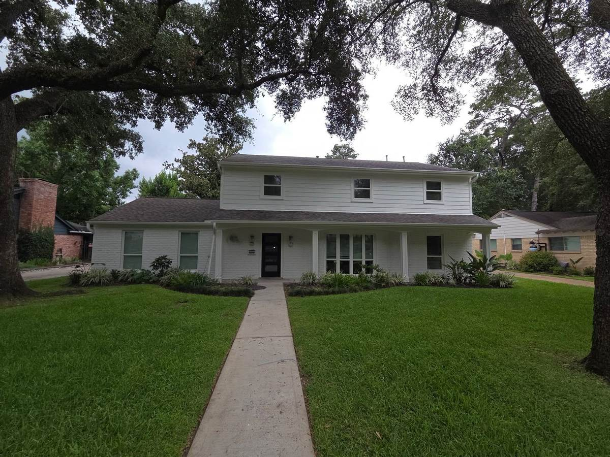
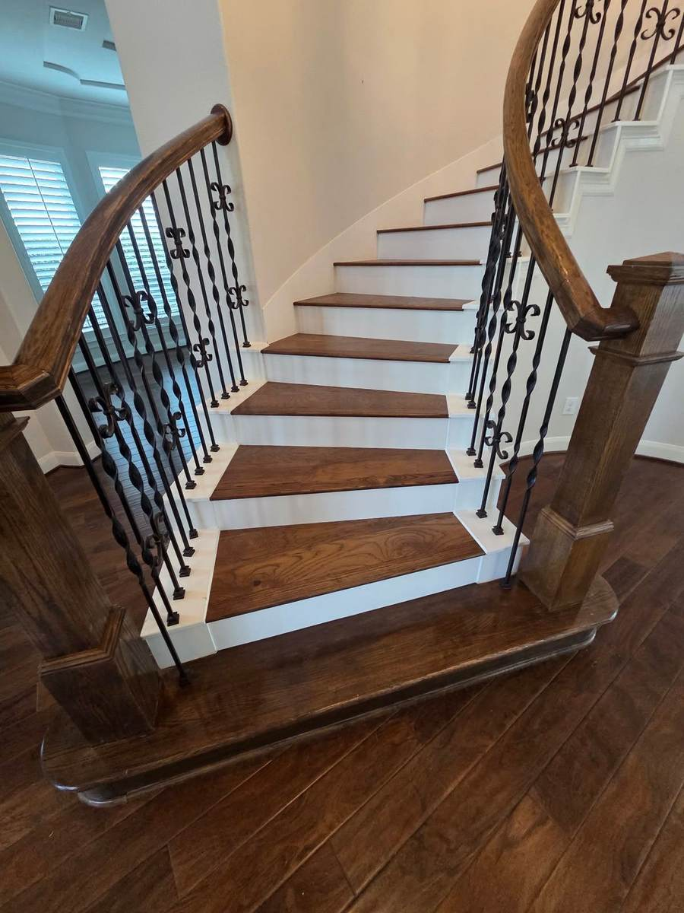
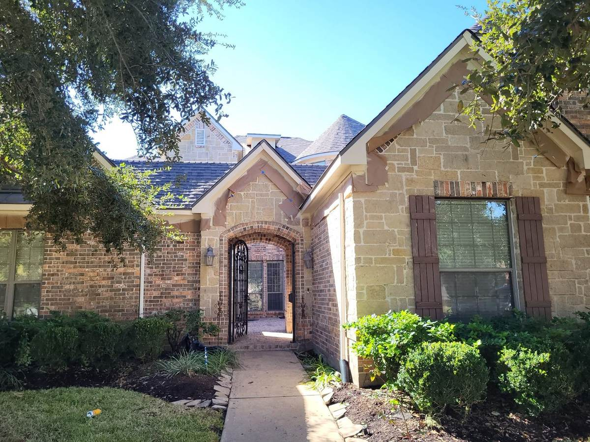
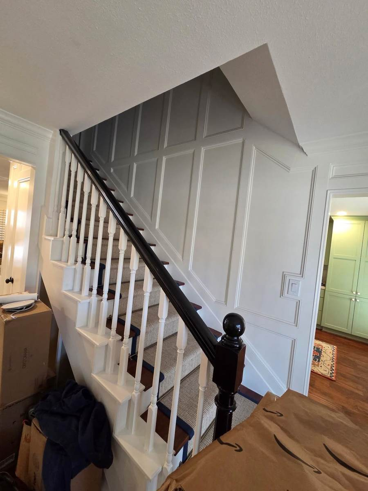
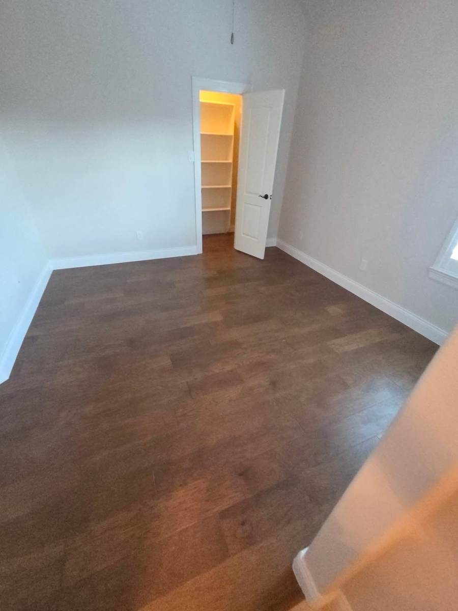
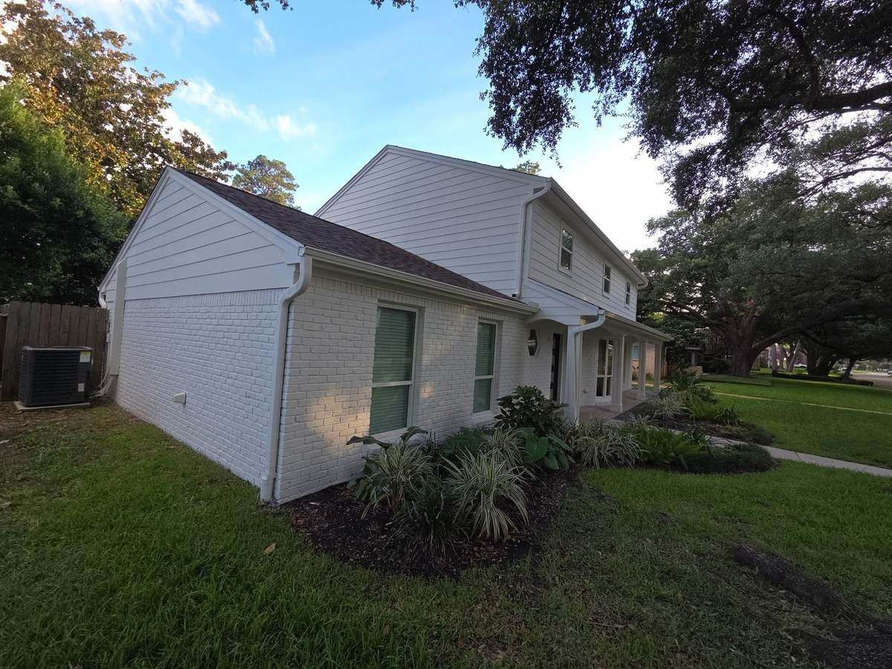

Interior y Exterior · Houston, TX
Prime Coat es un equipo de pintura de casas en Houston para quienes quieren líneas limpias, buena preparación y un trabajo ordenado de principio a fin — por dentro y por fuera.
Lo que pintamos
Paredes, techos, molduras, puertas y gabinetes. Movemos los muebles, protegemos tus pisos, cortamos líneas limpias y dejamos el espacio más limpio de como lo encontramos.
Fachadas, estuco, aleros y puertas de entrada. Lavamos, raspamos, resanamos e imprimamos antes de la capa final para que aguante el sol y la lluvia de Houston.
Por qué nos eligen
Lavado, lijado, resane, cinta e imprimación. La preparación es lo que hace que el acabado dure — por eso no la saltamos.
Pintura de calidad, líneas rectas y cobertura completa. Tratamos tu casa como si fuera la nuestra.
Cinta retirada, pisos despejados, basura recogida. Entras a un cuarto terminado, no a un desorden.
Nuestro trabajo
Una muestra de trabajos de interior y exterior en el área de Houston — casas reales, acabados reales.

Houston, TX

Trabajo de detalle interior

Houston, TX

Trabajo de detalle interior

Repintado de recámara

Houston, TX
Reseñas
Comentarios reales de dueños de casa en el área de Houston para los que hemos pintado.
Agrega aquí una reseña real — qué le pintaron al cliente y qué destacó del trabajo.Nombre del clienteZona, TX
Agrega aquí una reseña real — qué le pintaron al cliente y qué destacó del trabajo.Nombre del clienteZona, TX
Agrega aquí una reseña real — qué le pintaron al cliente y qué destacó del trabajo.Nombre del clienteZona, TX
Zona de servicio
Trabajamos en toda el área metropolitana de Houston. ¿No sabes si llegamos hasta ti? Solo pregunta — si no cubrimos tu zona, te orientamos hacia dónde acudir.
Preguntas frecuentes
Cuéntanos sobre tu proyecto y te damos una cotización. Interior, exterior o los dos.
O contáctanos directo en jax3485403@gmail.com